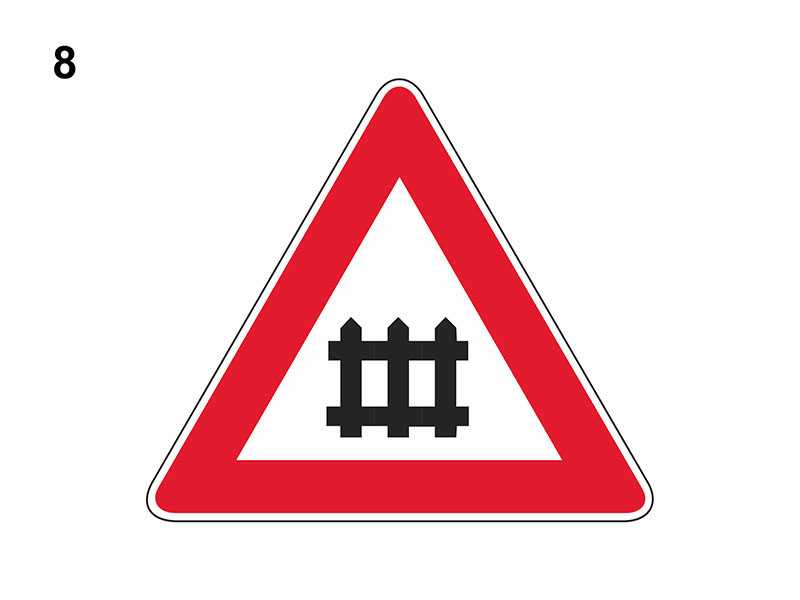

Passaggio a livello con barriere o semibarriere

E' un segnale di pericolo che preannuncia (di norma a 150 metri) un passaggio a livello (attraversamento ferroviario) con barriere o semibarriere (indipendentemente dal numero di binari).
Dopo il segnale raffigurato, se ci sono le semibarriere, è installato un dispositivo a luci rosse lampeggianti, se ci sono le barriere, altrimenti è installato un dispositivo a luce rossa fissa.
In presenza del segnale è necessario moderare la velocità (in relazione alla visibilità della linea ferroviaria) e fermarsi se ci sono una luce rossa fissa accesa (due luci rosse lampeggianti in quello con semibarriere), il dispositivo acustico a campana in funzione o cavalletti a strisce bianche e rosse che sbarrano i binari.
Non è consentito impegnare il passaggio a livello se il traffico intenso impedisce di sgomberarlo.
Se il veicolo si ferma per avaria sui binari, il conducente deve adottare ogni iniziativa utile al fine di evitare incidenti.
Sono vietati:
Il sorpasso si può effettuare se il passaggio è regolato da un semaforo o da agenti e si rimane nel proprio senso di marcia (ossia senza invadere la semicarreggiata opposta).
Non è vero che obbliga ad arrestarsi se le luci rosse poste in prossimità delle barriere o delle semibarriere sono spente o che si trova dopo il segnale DOPPIA CROCE DI S. ANDREA (che si trova solamente nei passaggi a livello senza barriere).
Dopo il segnale raffigurato, se ci sono le semibarriere, è installato un dispositivo a luci rosse lampeggianti, se ci sono le barriere, altrimenti è installato un dispositivo a luce rossa fissa.
In presenza del segnale è necessario moderare la velocità (in relazione alla visibilità della linea ferroviaria) e fermarsi se ci sono una luce rossa fissa accesa (due luci rosse lampeggianti in quello con semibarriere), il dispositivo acustico a campana in funzione o cavalletti a strisce bianche e rosse che sbarrano i binari.
Non è consentito impegnare il passaggio a livello se il traffico intenso impedisce di sgomberarlo.
Se il veicolo si ferma per avaria sui binari, il conducente deve adottare ogni iniziativa utile al fine di evitare incidenti.
Sono vietati:
- l'inversione di marcia
- la retromarcia
- la sosta
Il sorpasso si può effettuare se il passaggio è regolato da un semaforo o da agenti e si rimane nel proprio senso di marcia (ossia senza invadere la semicarreggiata opposta).
Non è vero che obbliga ad arrestarsi se le luci rosse poste in prossimità delle barriere o delle semibarriere sono spente o che si trova dopo il segnale DOPPIA CROCE DI S. ANDREA (che si trova solamente nei passaggi a livello senza barriere).